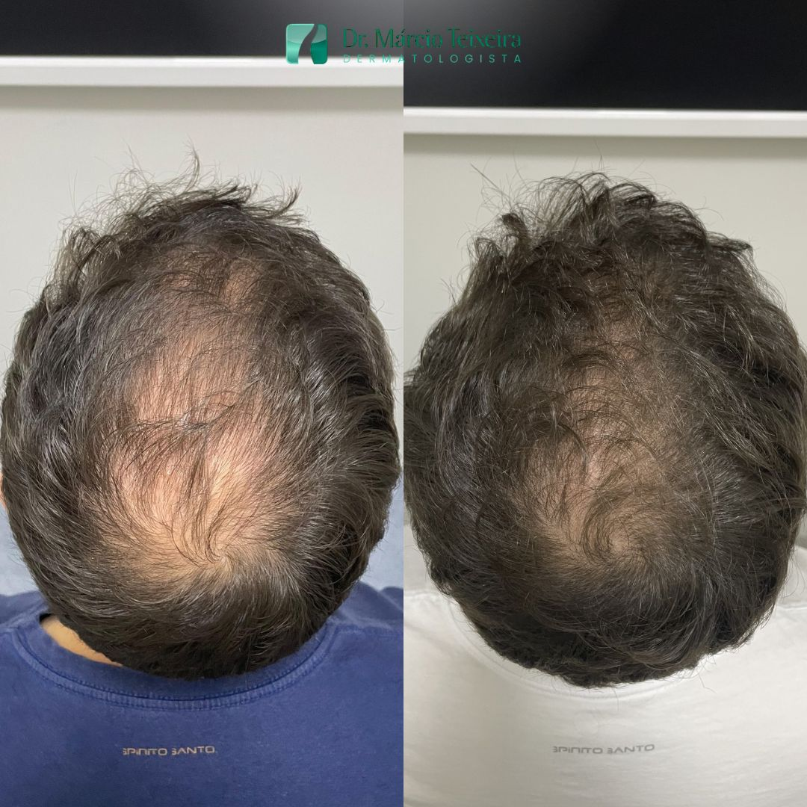
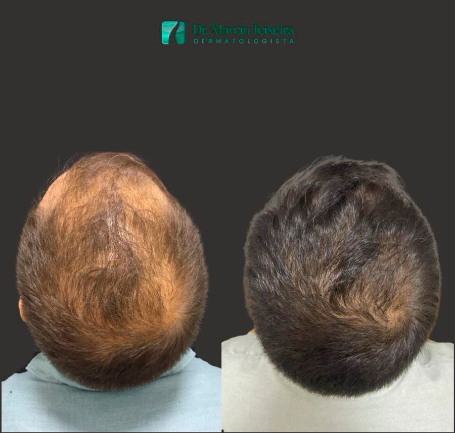
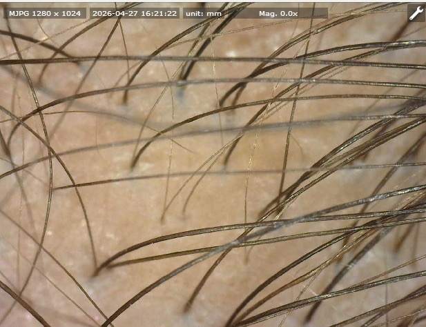
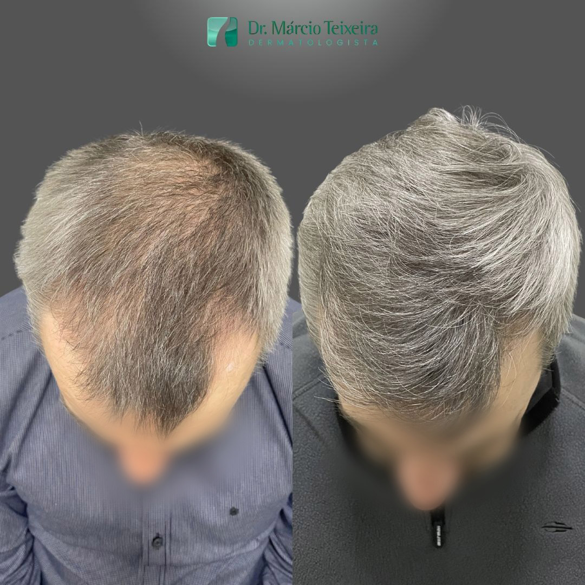
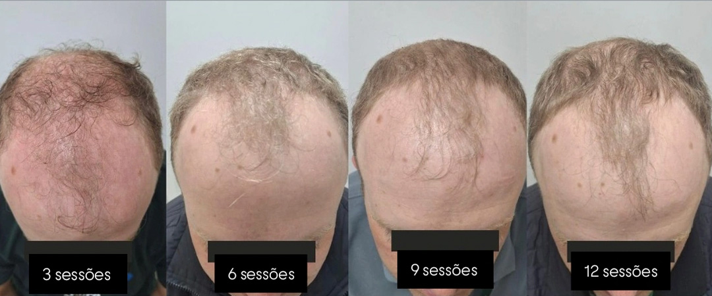
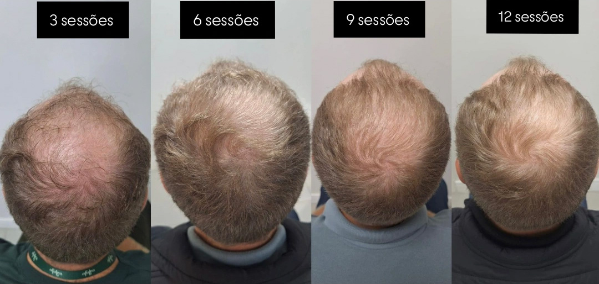

Tricologia
Saúde e força para os seus cabelos
Nosso cabelo reflete nossa saúde. Diagnóstico preciso e tratamento individualizado para as alterações dos cabelos e do couro cabeludo com a mesma ciência e o cuidado humano que nos diferencia, em Porto Alegre.
- Excelênciadesde 1993
- Dermatologista& tricologista
- Porto AlegreAv. Nilo Peçanha


A especialidade
O que é a Tricologia
A tricologia é a área da dermatologia dedicada à saúde dos cabelos e do couro cabeludo. É ela que investiga e trata a queda de cabelo, a calvície, o afinamento dos fios e as doenças que afetam o couro cabeludo, sempre a partir de um diagnóstico médico preciso.
Cada queda tem uma causa, e cada causa pede uma conduta diferente. Por isso o tratamento começa entendendo a sua, com avaliação clínica e tricoscopia, para então construir um plano feito para o seu caso, e não uma fórmula genérica.
Sinais de alerta
Está na hora de avaliar?
Perder alguns fios por dia é normal. Mas quando a queda se intensifica, o cabelo afina ou o couro cabeludo aparece mais, é hora de procurar um especialista. Identificar cedo é o que faz diferença no resultado.
Procure avaliação se você percebe
Queda acentuada de cabelo, no banho, no travesseiro ou ao pentear.
Fios mais finos, sem volume, e couro cabeludo mais visível.
Entradas aprofundando ou coroa (topo da cabeça) rareando.
Linha divisória do cabelo alargando ou rarefação na parte da frente (mulheres).
Coceira, descamação, oleosidade excessiva ou caspa persistente.
Falhas localizadas, ou queda após parto, dieta, estresse ou doença.
Quanto antes, melhor
o folículo capilar responde melhor ao tratamento enquanto está ativo. Iniciar cedo aumenta as chances de estabilizar a queda e recuperar densidade. Na dúvida, agende uma avaliação.
Diagnóstico
Avaliação de precisão
Tratar sem diagnosticar é apostar no escuro. Por isso a sua consulta tricológica une a história clínica ao exame do couro cabeludo com tricoscopia, uma microcâmera que amplia os fios e os folículos e revela o que o olho não vê: a espessura dos fios, a densidade por área e os sinais de cada tipo de queda.
Quando a causa pode ser interna, como questões hormonais, nutricionais ou da tireoide, são solicitados exames complementares. É essa leitura completa que define o tratamento certo, com o mesmo rigor do Método 4D aplicado à pele.

Passo a passo
Como funciona o tratamento
- Avaliação e tricoscopiaentendemos a sua queixa, examinamos o couro cabeludo e analisamos os fios com aumento.
- Diagnóstico da causacom exames complementares quando necessário, definimos o tipo e a origem da queda.
- Plano individualizadoa conduta é montada para o seu caso e pode combinar medicação, procedimentos no couro cabeludo e cuidados de rotina.
- Acompanhamentocomo o fio cresce em ciclos, reavaliamos a evolução ao longo dos meses e ajustamos o que for preciso.

Evolução
Sessão a sessão, o cabelo responde
O fio cresce em ciclos, por isso o tratamento capilar é contínuo e acompanhado de perto. A cada sessão o couro cabeludo é reavaliado e fotografado, e a conduta é ajustada conforme a resposta de cada paciente. Abaixo, a evolução registrada da 3ª à 12ª sessão.


Antes e Depois
Resultados que falam por si
Casos reais de pacientes do Dr. Márcio. Cada tratamento é individual e os resultados variam de pessoa para pessoa.
Imagens reais de pacientes, utilizadas com autorização. As fotografias têm finalidade informativa e ilustram resultados individuais; cada tratamento é único e os resultados variam de pessoa para pessoa.
O que tratamos
Condições capilares
A tricologia cuida de muito mais do que a calvície. Cada quadro tem uma abordagem própria, definida na avaliação.
Alopecia androgenética, a calvície de padrão masculino e feminino.
Eflúvio telógeno, a queda intensa após parto, dieta, estresse ou doença.
Alopecia areata, as falhas localizadas no couro cabeludo.
Dermatite seborreica e caspa, com descamação, coceira e oleosidade.
Foliculite e doenças do couro cabeludo, com inflamação e sensibilidade.
Afinamento e perda de densidade, fios mais finos e sem volume.
Quem cuida de você
Tricologia com respaldo médico
Queda de cabelo é assunto médico. O Dr. Márcio Teixeira é dermatologista e tricologista, com excelência desde 1993 e presença ativa nos principais congressos da área. Aqui o seu cabelo é tratado com diagnóstico, ciência e acompanhamento, longe de fórmulas milagrosas e promessas vazias.
Dúvidas frequentes
Perguntas frequentes
A queda de cabelo tem tratamento?
Na maioria dos casos, sim. O resultado depende do diagnóstico correto e do início precoce. Quanto antes a causa da queda é identificada, maiores as chances de estabilizar e recuperar a densidade capilar.
Como é feito o diagnóstico?
A avaliação combina a sua história clínica, o exame do couro cabeludo e a tricoscopia (análise dos fios e folículos com microcâmera de aumento). Quando necessário, são solicitados exames complementares para investigar causas internas.
Quanto tempo dura o tratamento?
Depende da causa e do grau da queda. O cabelo cresce em ciclos lentos, então o tratamento é contínuo e acompanhado ao longo dos meses. O plano e a periodicidade são definidos individualmente na avaliação.
Tricologia é só para homens?
Não. A queda de cabelo afeta homens e mulheres, em qualquer idade. O Dr. Márcio trata tanto a calvície masculina quanto o afinamento e a rarefação capilar feminina, com abordagens específicas para cada caso.
Em quanto tempo vejo resultado?
Como o fio cresce devagar, os primeiros sinais costumam aparecer após alguns meses, com a queda estabilizando antes da repilação. A constância no tratamento é o que garante o resultado. Resultados variam de pessoa para pessoa.
O tratamento é doloroso?
A maioria das abordagens é confortável e bem tolerada. Procedimentos no couro cabeludo são realizados com técnica e cuidado para minimizar o desconforto, sempre por médico dermatologista.
O conteúdo desta página é informativo e não substitui a consulta médica. A indicação, a técnica e os tratamentos são definidos individualmente em avaliação presencial. Resultados variam de pessoa para pessoa. Atendimento realizado por médico dermatologista. Conteúdo em conformidade com as normas do CFM sobre publicidade médica.
Seu cabelo merece um diagnóstico de verdade
Quanto antes você avalia, maiores as chances de estabilizar a queda e recuperar densidade. Agende sua avaliação tricológica com o Dr. Márcio.